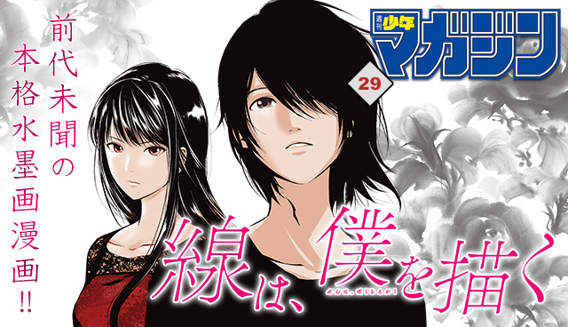
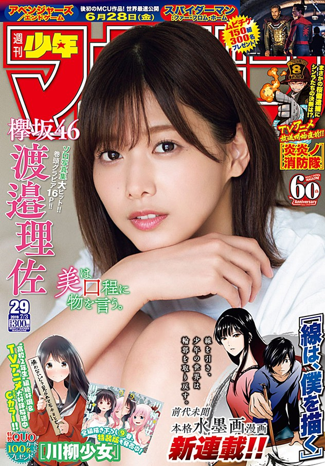
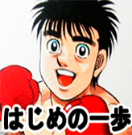
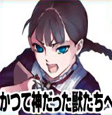

This week's Weekly Shonen Magazine posting order & comments from the author.

Kanojo, Okarishimasu

There will be an extra story as a bonus in the next volume.
Days

Thanks to you all we reached 300 chapters in the series. I'll continue to do my best.
Runway de Waratte

I'm very excited recently.
Tokyo Revengers

Even if it's reality or playing game, whenever I turn around I get distracted with my son.
Domestic Girlfriend

The regular and special edition of the new Volume 23 has been released on 17th Monday! I want you all to look for it by all means because the anime extra scene of the special edition is really spicy!
Senryuu Girl

We reached 9 volumes on sale already. Thank you so much!
Go-Toubun no Hanayome

The lives of three people and one dog began.
Fire Force

I went to France last year since they asked me, but I'll go to two more countries later this year. It feels different when you are serialized in a magazine. It's branded.
Edens Zero

The release date for Mr. Kojima's 'Death Stranding' has been revealed. I'm looking forward to it.
Hitman

I found a really delicious and small restaurant in the neighbourhood. Since the menu changes for each school section, it seems nice.
Seitokai Yakuindomo

I use soothing gums to blow off my sleepiness.
Diamond no Ace act II

'The Pitfalls of Sabermetrics' is a really good book to talk about.
Hajime no Ippo

I know when the rainy season is coming with the way the ink bleeds through
The Seven Deadly Sins

My game life is over when PS5 is fully Internet-enabled.
Katsute Kami Datta Kemono-tachi e

I will interrupt you a bit from another magazine. Watch the anime! I'm glad if you also read the manga.
Borading School Juliet

Teppanyaki is fun~.
Shinanaide Azukawa-san

If there are mushrooms, then it's a mushroom school.
Gamblers Parade

Wow! Not only gambling, but also gambling cartoons are destroyed!! (Kodaka)
Soredemo Ayumu wa Yosetekuru

Keep your eyes on your cooler. I'm scared of electricity.
Blue Lock

Everyday is a war just by having to give your children a meal. (Nomura)
Mako-san wa Shindemo Jiritsu Shinai

Since the book work is already finished, thank you for making us reach 4 volumes!
Shichiha Gojuroku

Good luck to Ayuei-chan. (Sasako)
Orient

I'm addicted to collecting cool containers. Teacups and so on.
Fumetsu no Anata e

I have been 4 years drawned by a boat in a nearby park. Finally I got on. I was happy.
Danshi Kokosei wo Yashinaitai

It's hot.
Sen wa boku wo Egaku
Togami Hiromasa & Atsunori Horiuchi
It's been a long time since the previous series. (Horiuchi)